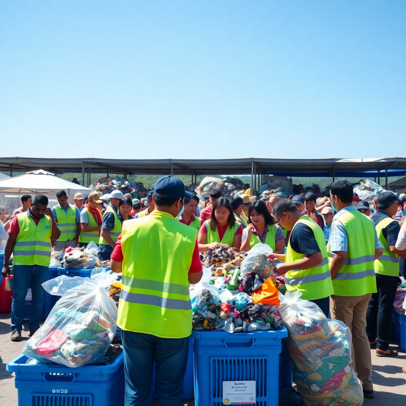
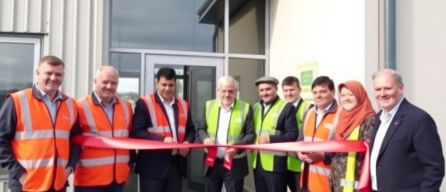
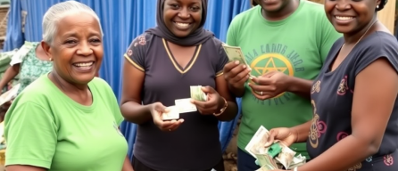
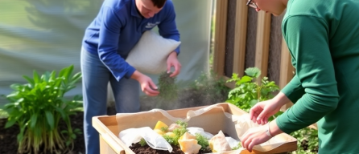
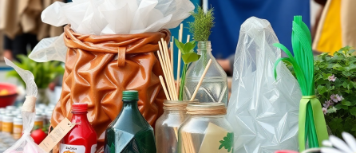

Latest Activities & Updates
Stay informed about our latest community initiatives, waste bank
achievements, and
environmental education events across Kota Batu.
environmental education events across Kota Batu.
Search activities, events, or news...

Filter Activities


All Activities
Showing 1-6 of 42
October 10, 2023
Waste Sorting Workshop at SDN 01 Batu
Read more




October 05, 2023
Inauguration of New Central Waste Bank
Facility
Facility
The Mayor officially opens the new state-of-the-art sorting
and processing facility to handle increased city capacity.
and processing facility to handle increased city capacity.
Read more


September 28, 2023
Record Payouts at Desa Oro-Oro Ombo Waste
Bank
Bank
Local residents successfully converted over 2 tons of
recyclable materials into economic value this month.
recyclable materials into economic value this month.
Read more



September 20, 2023
Mastering Home Composting Techniques
A hands-on session teaching households how to effectively
manage organic kitchen waste to produce high-quality
compost.
manage organic kitchen waste to produce high-quality
compost.
Read more



September 12, 2023
Upcycling Art & Craft Exhibition
Showcasing innovative products created by local artisans
using materials sourced entirely from our waste banks.
using materials sourced entirely from our waste banks.
Read more


September 01, 2023
Quarterly Waste Bank Directors Coordination
Read more

...